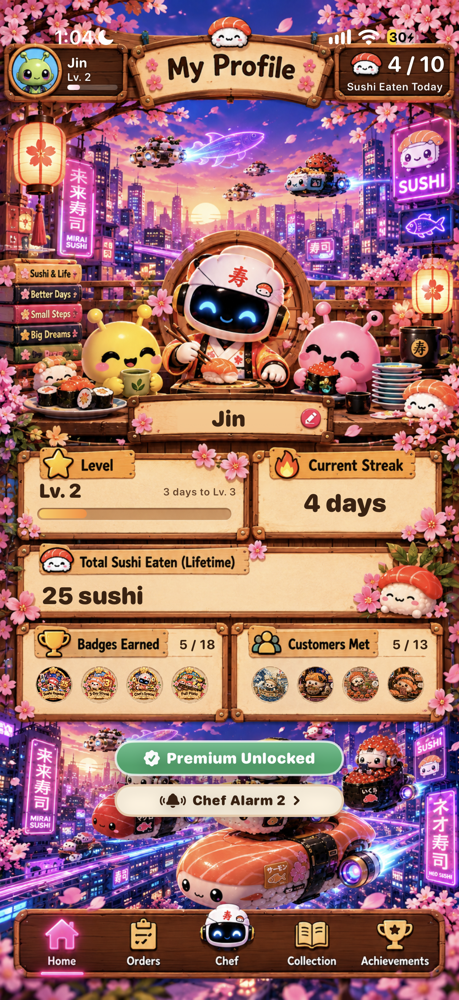
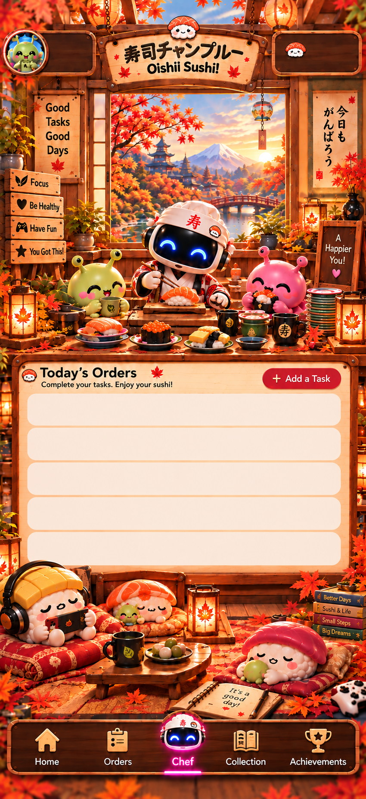
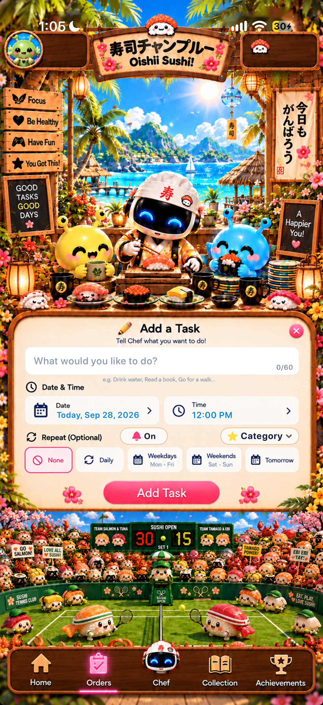
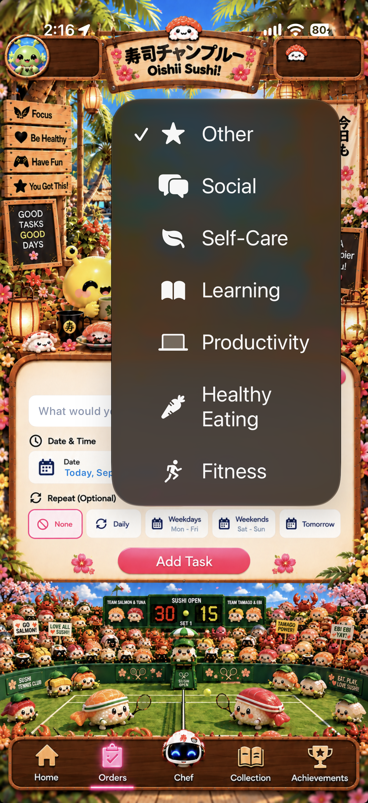
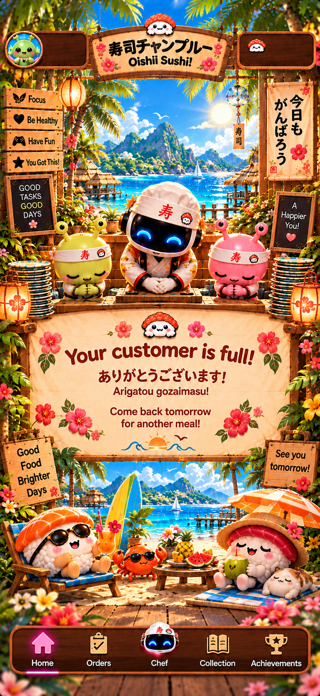
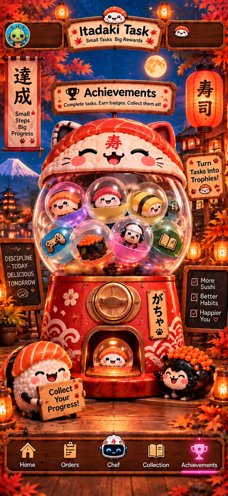
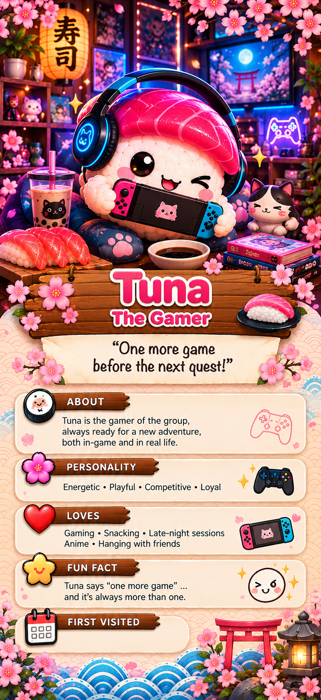

Task system
Open orders are shown for today and sorted by due time so the next bite is easy to spot.
Official Website
Itadaki Task is a cheerful iOS task app where each completed order becomes sushi eaten at the counter. This guide explains how the app works, what each screen means, and how to fix common setup issues.

Maximum sushi a customer can eat each day.
Achievement badges track streaks, totals, categories, and big milestones.
Collection customers can be met as achievement rewards.
Getting Started
Itadaki Task turns your daily to-dos into sushi orders. You add a task, choose when it is due, optionally repeat it, and let Chef remind you. When you finish the task, tap it on the order board. The app marks it complete, counts one sushi eaten for the day, updates your lifetime total, and checks whether you unlocked any achievements or customers.

How Itadaki Task Works
A task is saved with a title, due date, repeat option, reminder state, and completion state. Completing it marks the order as eaten, increases today's sushi count, and updates your streak and achievement progress.
Open orders are shown for today and sorted by due time so the next bite is easy to spot.
Each completed order adds one sushi, up to the daily 10-sushi meal limit.
Totals, streaks, and categories feed achievements, and some achievements introduce collection customers.
Add A Task
Tap Add a Task from the home screen or Orders button. The order sheet lets you write the task, set the date and time, and choose a repeat option.
Enter up to 60 characters, such as Drink water, Read a book, or Go for a walk.
Use the date picker and time picker. The default time changes with the daypart.
Select a repeat option, then use Category to group the task by focus, health, fun, self-care, learning, productivity, healthy eating, fitness, social, or other.
Tap Add Task. The app schedules a reminder when notifications are allowed.


Daily Limit
Each completed task counts as one sushi. The daily counter tops out at 10 / 10. When the customer is full, the app switches to the thank-you screen, hides the add-task area, and locked incomplete tasks cannot be completed until the next daily reset.
One-time completed tasks are cleaned up after about 24 hours. Recurring tasks reopen on the matching day: daily, weekdays, weekends, weekly, or the app's custom three-day recurrence.

Orders, Chef, Profile, Collection
Use these sections when you need to explain a screen to a customer or check what a button does.
The home/profile area shows the customer's avatar artwork, level, progress bar, current streak, lifetime sushi eaten, badges, and customers met. Level progress is based on streak milestones: 0, 1, 3, 7, 14, 30, 60, and 100 days.
Today's open tasks appear on the order board, sorted by due time. Tap an unfinished order to complete it. Finished one-time tasks remain visible for today, then expire later.
The Chef background changes by time of day: morning, noon, or night. When the customer is full, Chef moves to the thank-you artwork.
Collection shows the sushi customers you have met. Locked customers show as mystery tiles. Unlocked customers open a full-screen profile page with their art and first-met date.
Achievements track totals, daily bests, streaks, and task categories. Tapping a badge shows requirement, progress, unlock date, reward status, and any customer reward.
Some achievements introduce collection customers, such as Salmon for First Bite, Mama Roe for Full Plate, Uni for Chef's Special, and Tuna for a 3-day streak.


Profile Layout
The Profile screen gathers your progress into one cozy sushi-board layout. It is the easiest place to check how much you have done, how consistent you have been, and which rewards you have already earned.
Your avatar and customer name sit at the top with your current level and level progress.
The top counter shows today's meal progress, such as 4 / 10 sushi eaten today.
The streak panel shows how many days in a row you have completed at least one task.
Total Sushi Eaten shows your lifetime task completions across the app.
The badge row previews unlocked achievements and shows progress out of 18 badges.
The customer row previews collection characters and shows progress out of 13 customers.
Premium users can open Chef Alarm from Profile to preview and choose reminder sounds.

From My Profile, Premium users can tap the Chef Alarm control to choose from Chef Alarm 1 through Chef Alarm 5 for task reminders.
Reminders
Itadaki Task asks iOS for alert, badge, and sound permission when it schedules task reminders. If permission is not granted, reminders cannot appear until notifications are enabled in Settings.
Open iPhone Settings, choose Notifications, select Itadaki Task, and turn on Allow Notifications.
One-time tasks remind at their exact date and time if that time is in the future. Daily, weekday, weekend, and weekly reminders repeat at the selected time.
When you complete a task, its pending reminder is canceled so Chef does not remind you about finished work.
Premium users can pick a Chef Alarm sound from the Profile screen for task reminders.
Premium
Premium is intended as a one-time lifetime unlock. The included review screenshot shows a lifetime purchase flow and a restore option for people who already purchased.
Restore Purchases
If you already bought the lifetime unlock, open the Premium screen and choose Restore Purchases while signed into the same Apple ID. This is the right path after reinstalling, switching devices, or setting up a new iPhone.
Troubleshooting
Your customer is full for the day. The app intentionally stops the meal at 10 completed tasks and reopens on the next daily reset.
Recurring tasks reopen when their repeat rule matches the day. Daily tasks reopen every day, weekdays reopen Monday through Friday, weekends reopen Saturday and Sunday, and weekly tasks reopen after at least seven days.
Check iOS notification permission first. Also make sure the task has a future date/time. Completing a task cancels its reminder.
When an achievement with a customer reward unlocks, the app queues the achievement reveal and then introduces the new customer in Collection.
Open the Premium screen and use Restore Purchases while signed into the same Apple ID used for the original purchase.
Contact
Send a short note with your device model, iOS version, what you expected to happen, and what happened instead. Screenshots are helpful when the issue is visual.
Email SupportLegal
These pages are intentionally reserved for the legal documents we will create separately.
Read how Itadaki Task handles local task data, reminders, Health permission, purchases, and support emails.
Open Privacy PolicyRead the app usage terms, Apple EULA note, Premium lifetime unlock terms, and support boundaries.
Open Terms of Use